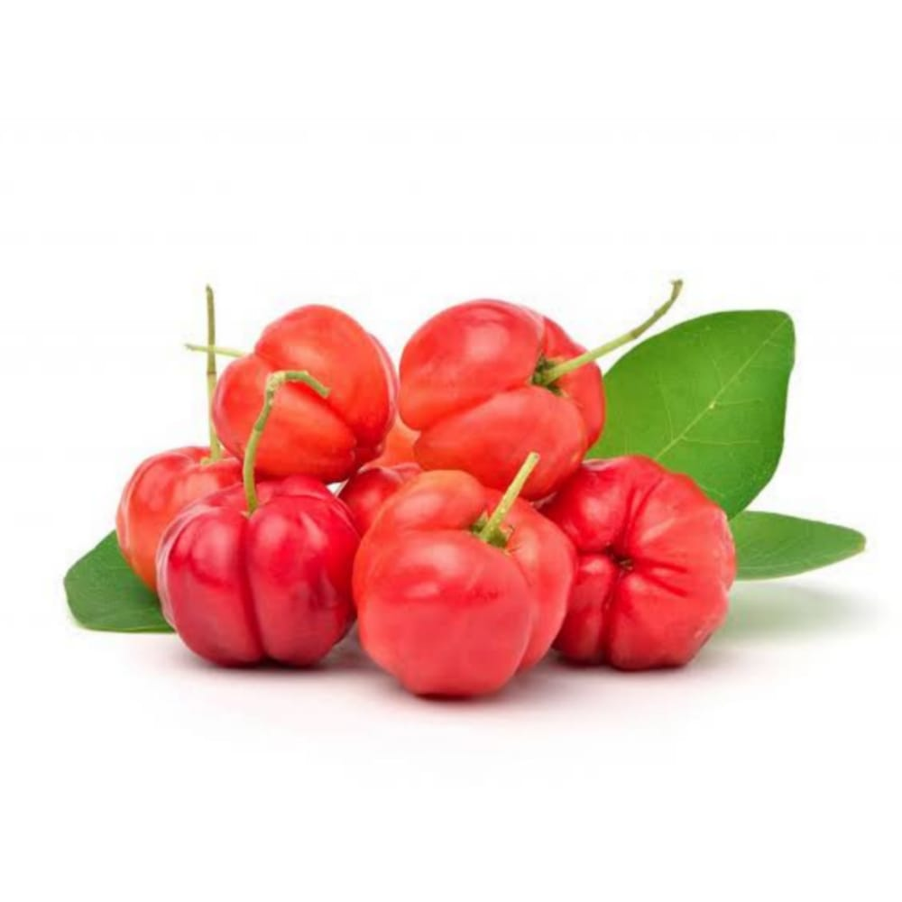
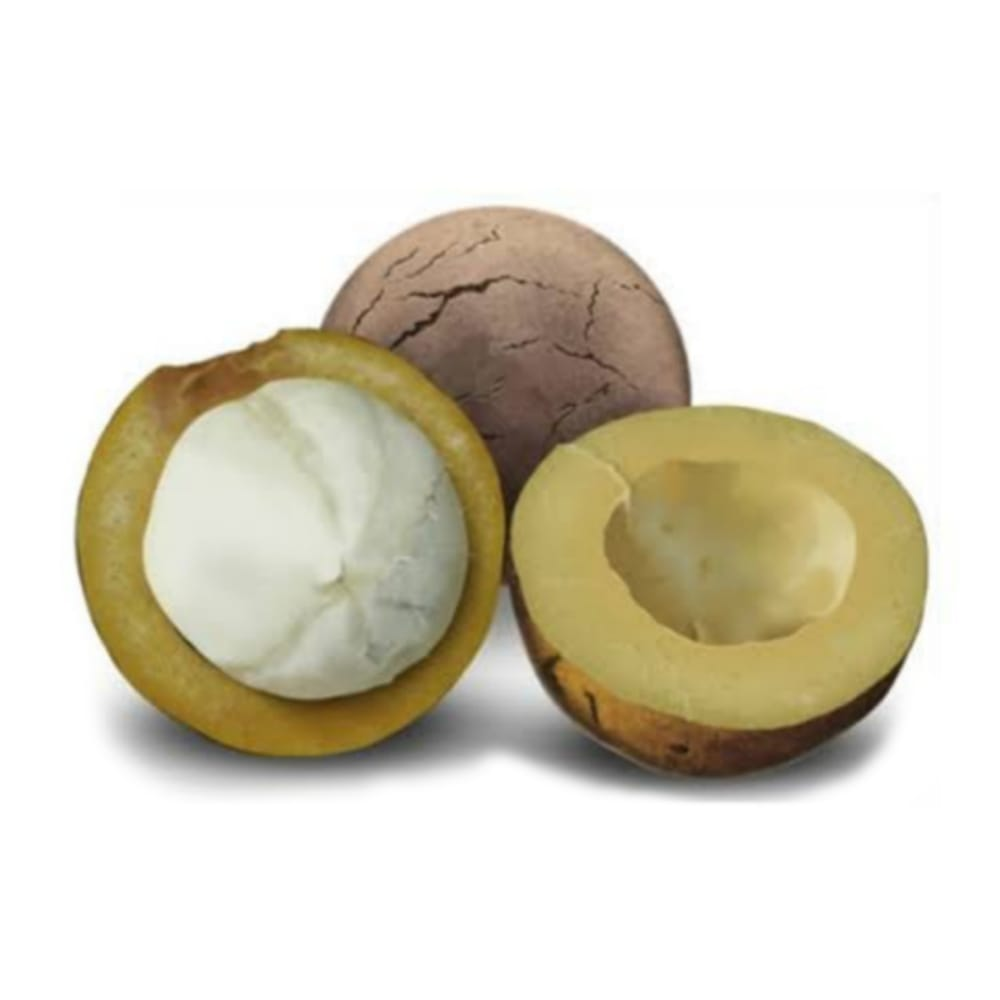
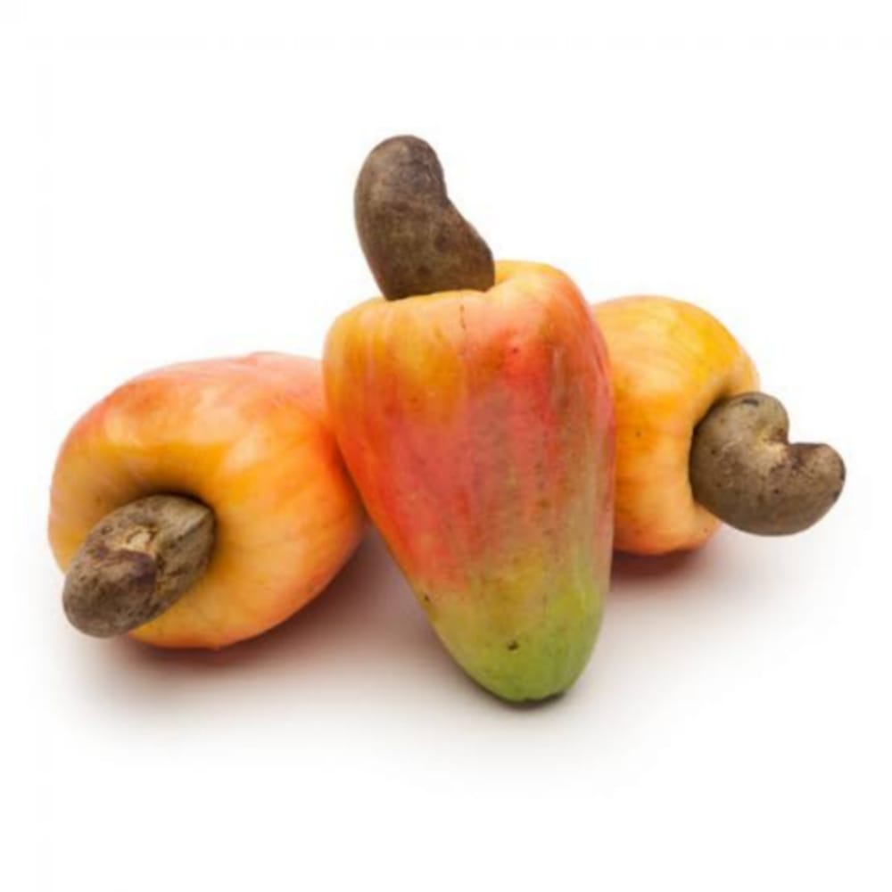
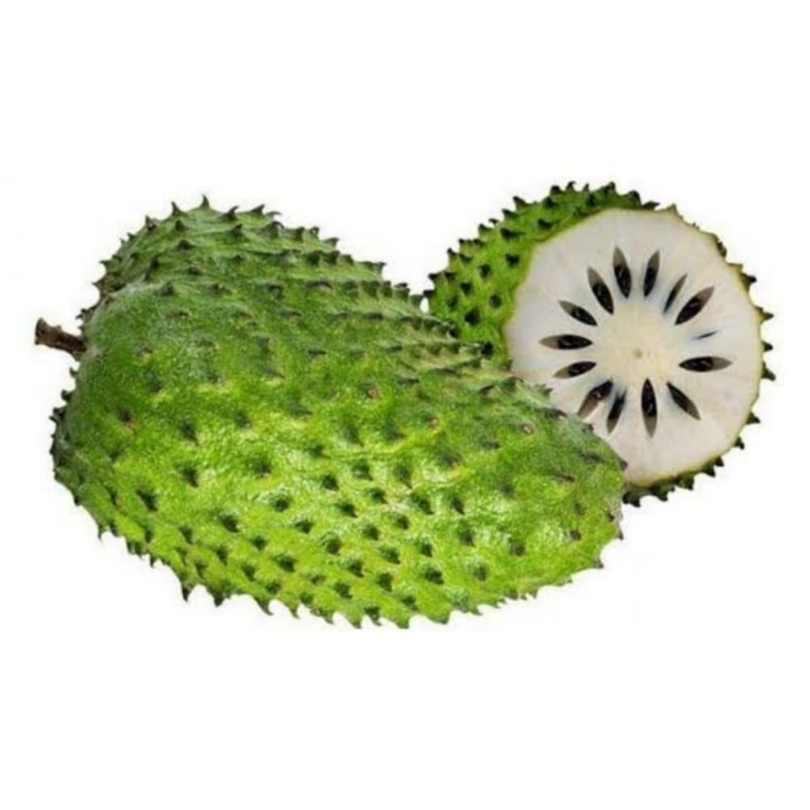
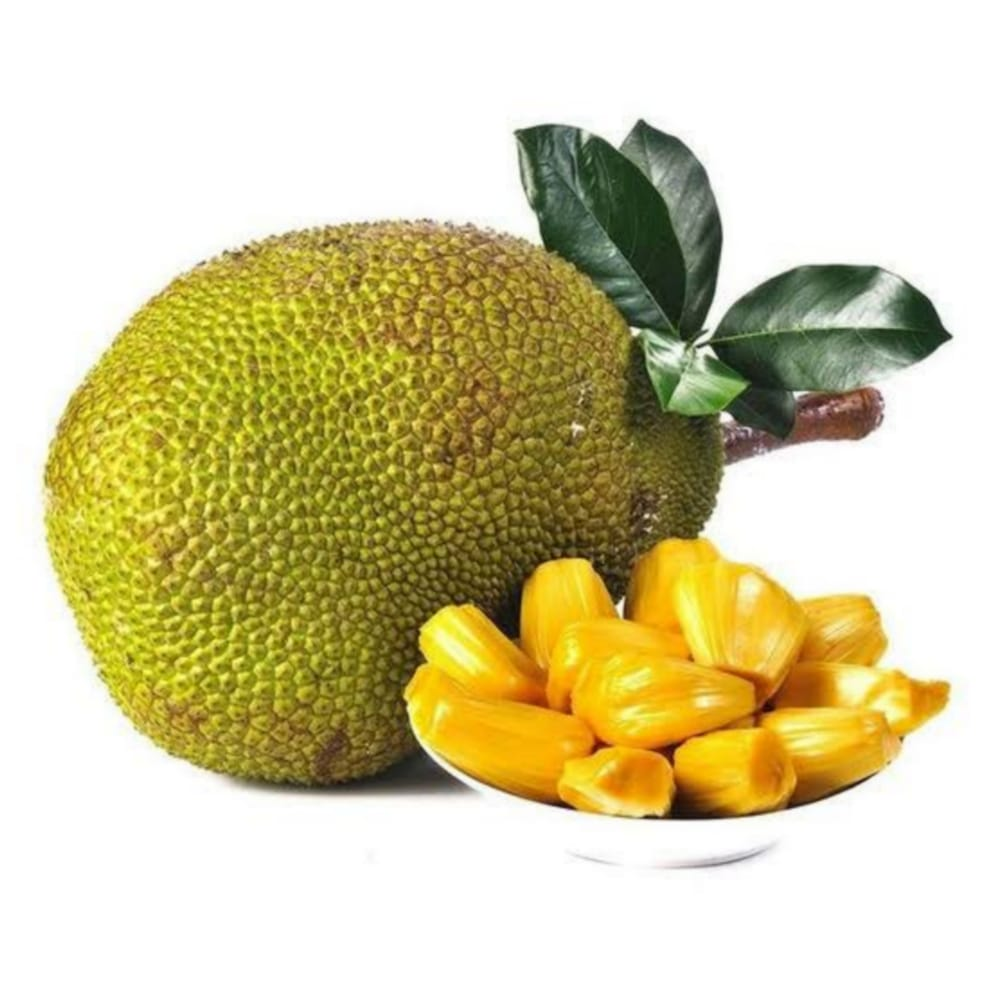
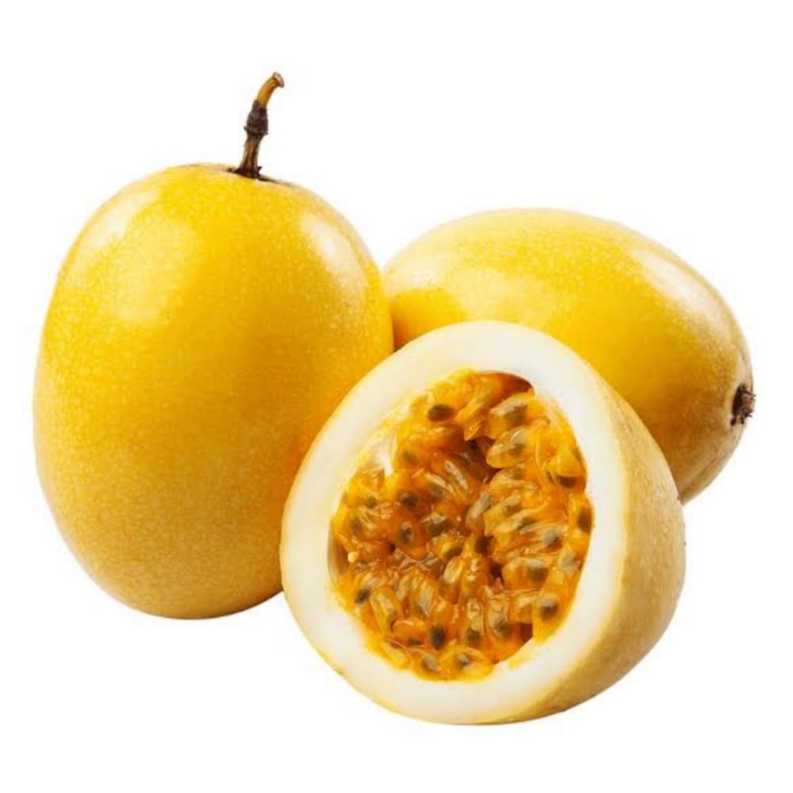
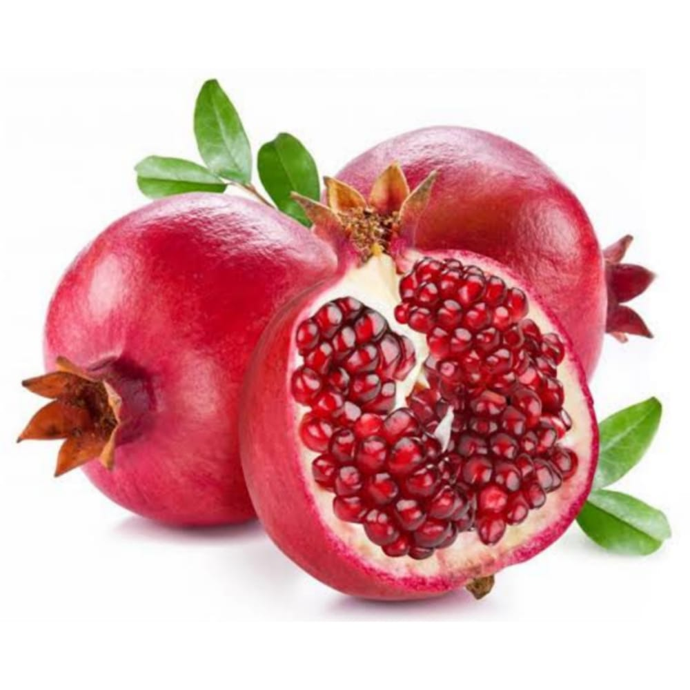
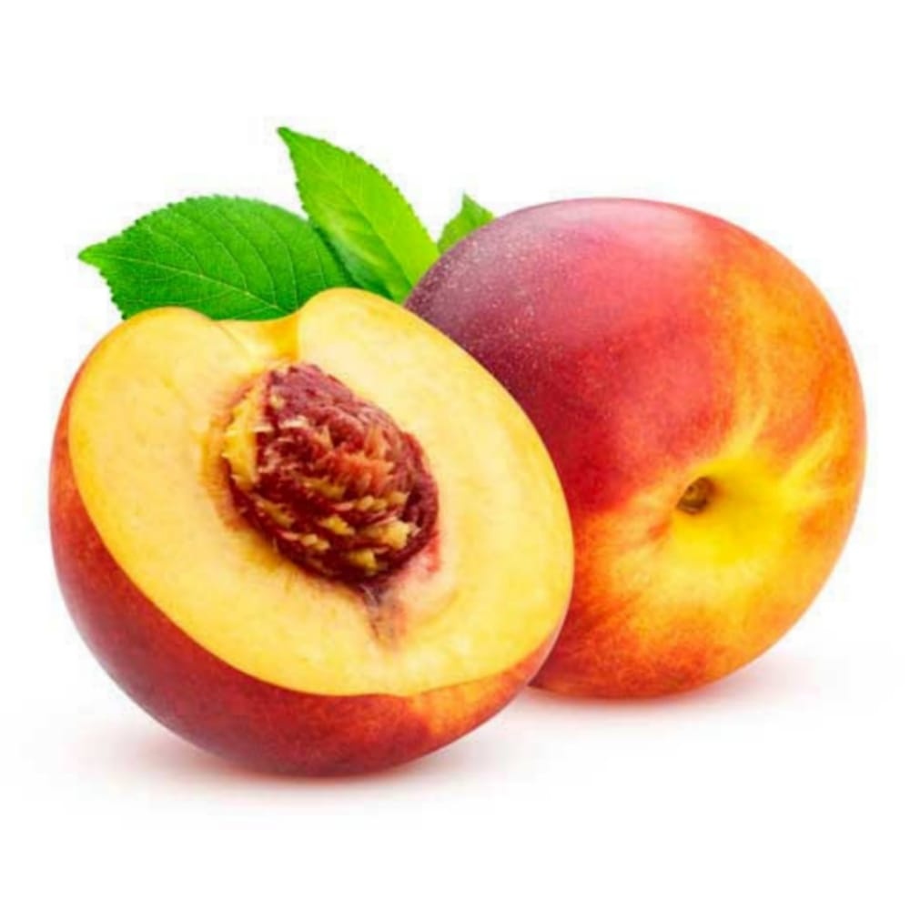
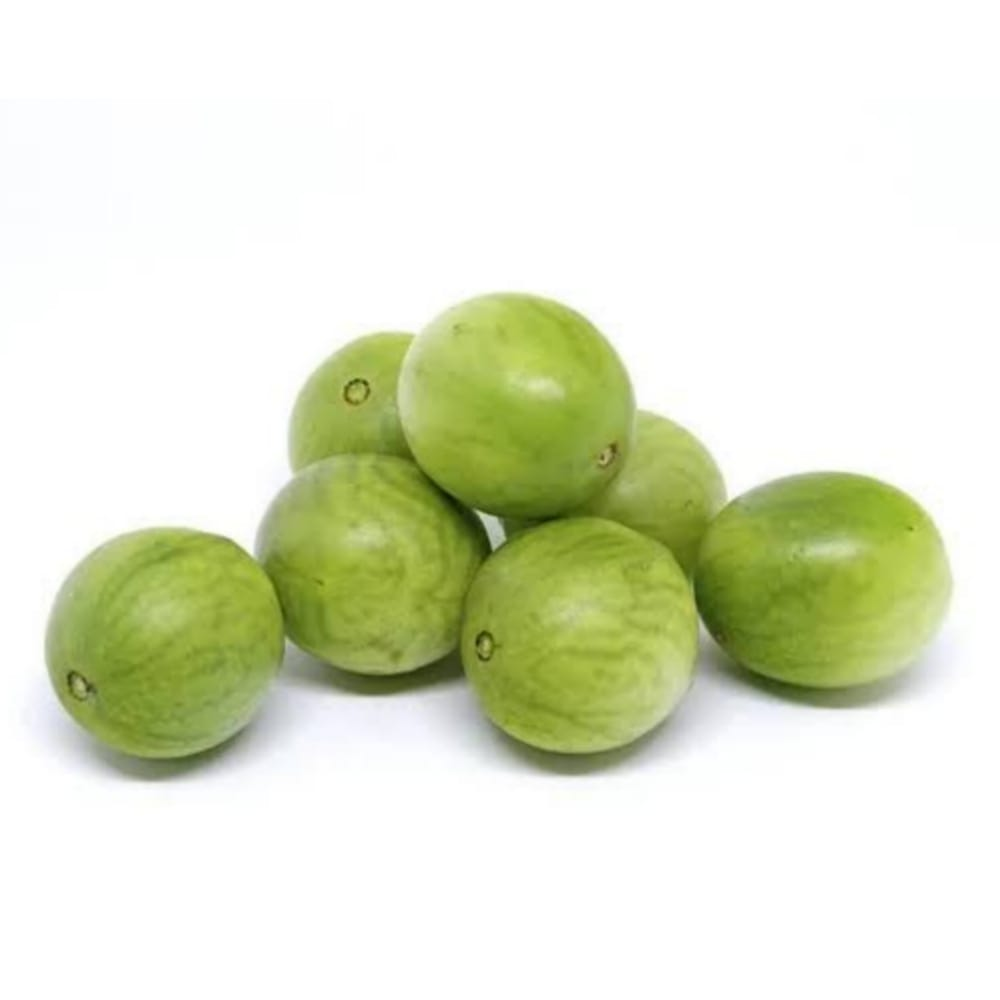

Acerola é uma fruta tropical com sabor que varia do azedo ao doce e que pode ser consumida crua ou utilizada em diversas receitas, como geleias, sucos e sorvetes. Além do sabor agradável, o alimento apresenta diversos benefícios para a saúde e o bem-estar, como fortalecimento da imunidade e combate ao envelhecimento precoce. .
Bacuri (Platonis insignis Mart.) é uma árvore nativa da floresta amazônica, que pode atingir de 20 a 40 metros de altura. A espécie dá origem a um fruto de mesmo nome, de sabor agridoce e rico em potássio, fósforo, cálcio, zinco, magnésio, fibras, antioxidantes, vitamina C e vitamina A.
O caju, o pseudofruto, é suculento e rico em vitamina C e ferro. Depois do beneficiamento do caju, preparam-se sucos, mel, doces, como cajuada, caju passas, rapadura de caju.
A graviola é uma fruta de casca verde e espinhos, contendo uma polpa branca, macia de sabor doce e levemente ácido, podendo ser consumida ao natural ou usada no preparo de sucos, mousses, vitaminas e sobremesas.
Muito comum na fabricação de doces e geleias, a jaca é o maior fruto comestível que nasce em uma árvore. Isso mesmo, diferente da melancia ou do abacaxi, que são cultivados em plantação rasteira, ela cresce na jaqueira e sua origem é indiana.
O maracujá é um fruto rico em flavonoides, vitamina A e vitamina C, que podem ajudar no tratamento de diversas doenças, como ansiedade, hiperatividade, e no tratamento de problemas de sono.
A romã é o fruto da romãzeira (Punica granatum), comum no mediterrâneo oriental e médio oriente onde a polpa é usada para a preparação de aperitivos, sobremesa ou algumas vezes em bebida alcoólica.
O pêssego é o fruto do pessegueiro, uma pequena árvore nativa da China, pertencente à família das rosáceas. O pêssego é rico em fibras, bom para o funcionamento do intestino.
Fruto agridoce por mesclar sabores cítrico e adocicado, o umbu é nativo do semiárido brasileiro. Versátil, ele pode ser consumido in natura ou harmonizado em pratos doces e salgados de diferentes texturas, de seca à gelatinosa.
equipestorm@gmail.com, +55 (91) 9.40028922